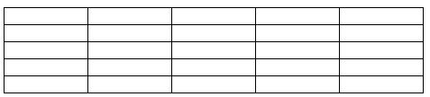
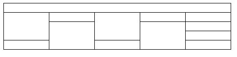
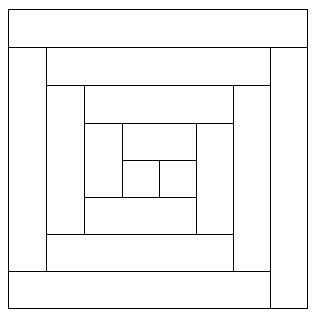
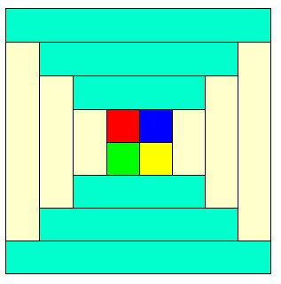

ЛАБОРАТОРНАЯ РАБОТА № 8
ОФОРМЛЕНИЕ HTML-ДОКУМЕНТА.
ТАБЛИЦЫ
Цель работы — изучить основы организации таблиц в HTML.
Теоретическая часть
Средства описания таблиц в HTML
По мере развития WWW стало ясно, что средств, которые заложены в НТМL, недостаточно для качественного отображения различного типа документов. Недостатком НТМL было отсутствие в его составе средств отображения таблиц. Для этой цели обычно использовался предформатированный текст (тег <PRE>), в котором таблица обрисовывалась символами АSСII. Но такая форма представления таблиц была недостаточно высокого качества и выбивалась из общего стиля документа. После введения таблиц в HTML у Web-мастеров появился не просто инструмент для размещения текстовых и числовых данных, а мощное средство дизайна для размещения в нужном месте экрана графических образов и текста.
Создание таблиц в HTML.
Для описания таблиц используется тег <ТАВLЕ>. Тег <ТАВLЕ>, как и многие другие, автоматически переводит строку до и после таблицы.
Создание строки таблицы — тег <ТR> Тег <ТR> (Таble Row, строка таблицы) создает строку таблицы. Весь текст, другие теги и атрибуты, которые требуется поместить в одну строку, должны размещаться между тегами <ТR></ТR>.
Определение ячеек таблицы - тег <ТD> Внутри строки таблицы обычно размещаются ячейки с данными. Каждая ячейка, содержащая текст или изображение, должна быть окружена тегами <ТD></ТD>. Число тегов <ТD></ТD> в строке определяет число ячеек (открыть)
<TABLE>
<TR>
<TD COLSPAN=3>Если в таблице два тега TR, то в ней две строки.</TD>
</TR>
<TR>
<TD>Если в строке три тега TD,</TD>
<TD>то в ней</TD>
<TD>три столбца.</TD>
</TR>
</TABLE>
Заголовки столбцов таблицы — тег <ТН>
Заголовки для столбцов и строк таблицы задаются с помощью тега заголовка <ТН></ТН> (Таblе Неаder, заголовок таблицы). Эти теги подобны <ТD></ТD>. Отличие состоит в том, что текст, заключенный между тегами <ТН></ТН>, автоматически записывается жирным шрифтом и по умолчанию располагается посередине ячейки. Центрирование можно отменить и выровнять текст по левому или правому краю. Если воспользоваться <ТD></ТD> с тегом <В> и атрибутом <АLIGN=center>, текст тоже будет выглядеть как заголовок. Однако следует иметь в виду, что не все браузеры поддерживают в таблицах жирный шрифт, поэтому лучше задавать заголовки таблиц с помощью <ТН>.
<TABLE >
<TR>
<TH>Заголовок центрирован по умолчанию</TH>
<TH COLSPAN=2>Заголовок может объединять столбцы</TH>
</TR>
<TR>
<TH>Заголовок может быть расположен перед столбцами</TH>
<TD>Текст или данные</TD>
<TD>Текст или данные</TD>
</TR>
<TR>
<TH ROWSPAN=3>Заголовок может объединять строки</TH>
<TD>Текст или данные</TD>
<TD>Текст или данные</TD>
</TR>
<TR>
<TD>Текст или данные</TD>
<TD>Текст или данные</TD>
</TR>
<TR>
<TD>Текст или данные</TD>
<TD>Текст или данные</TD>
</TR>
</TABLE>
Использование заголовков таблицы — тег <САРТIОN>
Тег <CAPTION> позволяет создавать заголовки таблицы. По умолчанию заголовки центрируются и размещаются либо над (<САРТION АLIGN=top>), либо под таблицей (<САРТION ALIGN=bottom>). Заголовок может состоять из любого текста и изображений. Текст будет разбит на строки, соответствующие ширине таблицы. Иногда тег <САРТION> используется для подписи под рисунком. Для этого достаточно описать таблицу без границ.
<TABLE>
<CAPTION ALIGN=top>Заголовок над таблицей</CAPTION>
<TR>
<TD>Текст или данные</TD>
<TD>Текст или данные</TD>
<TD>Текст или данные</TD>
<TD>Текст или данные</TD>
</TR>
</TABLE>
<TABLE>
<CAPTION ALIGN=bottom>Заголовок под таблицей </CAPTION>
<TR>
<TD>Текст или данные</TD>
<TD>Текст или данные</TD>
<TD>Текст или данные</TD>
</TR>
</TABLE>
Атрибут NOWRAP
Обычно любой текст, не помещающийся в одну строку ячейки таблицы, переходит на следующую строку. Однако при использовании атрибута NOWRAP с тегами <ТН> или <ТD> длина ячейки расширяется настолько, чтобы заключенный в ней текст поместился в одну строку.
Атрибут СОLSPAN
Теги <ТD> и <ТН> модифицируются с помощью атрибута СОLSPAN (Column Span, соединение столбцов). Если вы хотите сделать какую-нибудь ячейку шире, чем верхняя или нижняя, можно воспользоваться атрибутом СОLSPAN, чтобы растянуть ее над любым количеством обычных ячеек.
<TABLE BORDER="3">
<TR>
<TD>Если вы хотите сделать какую-нибудь
ячейку шире, чем верхняя или нижняя,
</TD>
<TD>можно воспользоваться атрибутом
СОLSPAN=, </TD>
</TR>
<TR>
<TD BGCOLOR=white COLSPAN="2" > чтобы
растянуть ее над любым количеством
обычных ячеек.</TD>
</TR>
</TABLE>
Атрибут ROWSPAN
Атрибут ROWSPAN, используемый в тегах <ТD> и <ТН>, подобен атрибуту СОLSPAN=, только он задает число строк, на которые растягивается ячейка. Если вы указали в атрибуте ROWSPAN=s число, большее единицы, то соответствующее количество строк должно находиться под растягиваемой ячейкой. Внизу таблицы ее поместить нельзя.
Атрибут WIDТН
Атрибут WIDТН применяется в двух случаях. Можно поместить его в тег <ТАВLЕ>, чтобы дать ширину всей таблицы, а можно использовать в тегах <ТR> или <ТН>, чтобы задать ширину ячейки или группы ячеек. Ширину можно указывать в пикселах или в процентах. Например, если вы задали в теге <ТАВLЕ> WIDTH=250, вы получите таблицу шириной 250 пикселов независимо от размера страницы на мониторе. При задании WIDТН=50% в теге <ТАВLЕ> таблица будет занимать половину ширины страницы при любом размере изображения на экране. Так что, указывая ширину таблицы в пикселах, имейте в виду, что если у пользователя узкая область просмотра, ваша страница может выглядеть несколько странно. Если вы пользуетесь пикселами, и таблица оказывается шире области просмотра, внизу появится полоса прокрутки для перемещения вправо и влево по странице. В зависимости от поставленных задач и тот, и другой способ задания ширины таблицы может оказаться полезным.
Атрибут СЕLLРАDDING
Данный атрибут определяет ширину пустого пространства между содержимым ячейки и ее границами, то есть задает поля внутри ячейки.
Атрибут CELLSPACING
Атрибут СЕLLSPACING определяет ширину промежутков между ячейками в пикселах. Если этот атрибут не указан, по умолчанию задается величина, равная двум пикселам. С помощью атрибута СЕLLSPASING= можно размещать текст и графику там, где вам нужно. Если вы хотите оставить пустое место, можно вписать в ячейку пробел.
Атрибуты АLIGN и VALIGN
Теги <ТR>, <ТD> и <ТН> можно модифицировать с помощью атрибутов ALIGN и VALIGN.
· Атрибут АLIGN определяет выравнивание текста и графики по горизонтали, то есть по левому или правому краю, либо по центру. Горизонтальное выравнивание может быть задано несколькими способами:
* ALIGN=blееdleft прижимает содержимое ячейки вплотную к левому краю.
* ALIGN=left выравнивает содержимое ячейки по левому краю с учетом отступа, заданного атрибутом СЕLLPADDING.
* АLIGN=сеnter располагает содержимое ячейки по центру.
* АLIGN=right выравнивает содержимое ячейки по правому краю с учетом отступа, заданного атрибутом СЕLLPADDING.
* Атрибут VALIGN осуществляет выравнивание текста и графики внутри ячейки по вертикали. Вертикальное выравнивание может быть задано несколькими способами:
* VALIGN=top выравнивает содержимое ячейки по ее верхней границе.
* VALIGN=middle центрирует содержимое ячейки по вертикали.
* VALIGN=bottom выравнивает содержимое ячейки по ее нижней границе.
Атрибут BGCOLOR
Данный атрибут позволяет установить цвет фона. В зависимости от того, с каким тегом (TABLE, TR, TD) он применяется, цвет фона может быть установлен для всей таблицы, для строки или для отдельной ячейки. Значением данного атрибута является RGB-код или стандартное название цвета.
Атрибут BACKGROUND
Данный атрибут задает фоновое изображение для таблиц. Применим к тегам TABLE и TD. Его значением является URL файла с фоновым изображением.
Атрибут BORDER
В теге <ТАВLЕ> часто определяют, как будут выглядеть рамки, то есть линии,
окружающие ячейки таблицы и саму таблицу. Если вы не зададите рамку, то получите
таблицу без линий, но пространство под них будет отведено. Того же результата
можно добиться, задав <ТАВLЕ ВОRDER=0>. Иногда хочется сделать границу потолще,
чтобы она лучше выделялась. Можно для привлечения внимания к рисунку или тексту
задать исключительно жирные границы. При создании вложенных таблиц приходится
делать для разных таблиц границы различной толщины, чтобы их легче было
различать.
Практическая часть
1. Постройте таблицу следующего вида:
|
 |
|
Figure: Таблица №1. |
2. Постройте таблицу следующего вида:
|
 |
|
Figure: Таблица №2. |
3. Постройте таблицу следующего вида:
|
 |
|
Figure: Таблица №3. |
4. Постройте таблицу следующего вида:
|
 |
|
Figure: Таблица №4. |
5. Использование стандартного параметра BORDER приводит к неоднозначности отображения границы таблицы. Точнее каждый браузер интер-претирует вид границы по своему. Для устранения подобного разночтения создают таблицу с простой однопиксельной рамкой. Последовательность действий такова:
a. Создать таблицу "подложку", состоящую из одной строки и одного столбца. Залить ее требуемым цветом.
b. Далее в эту таблицу помещаем вложенную, заливая каждую ячейку нужным цветом.
c. Устанавливаем свойство CELLSPACING вложенной таблицы равным 1, тогда нижняя таблица будет просвечивать и образует рамку толщиной 1 пиксель.
Создайте таблицу 6x6 с простой однопиксельной рамкой.
6. Создайте для таблицы № 4 простую однопиксельную рамку.
Контрольные вопросы
1. Какие функции выполняет тег <TR>? Имеет ли он закрывающий тег?
2. Какой существует аналог тега <TH>?
3. Для чего используется тег<CAPTION>?
4. Каковы функции атрибутов ROWSPAN и СОLSPAN?
5. Каков будет результат выполнения тега <ТАВLЕ ВОRDER=0>?
6. Чему можно задать цвет при помощи атрибута BGCOLOR? Какие существуют варианты записи цвета?
7. Для чего используются атрибуты ALIGN и VALIGN? Какими способами они могут быть заданы?
8. В каких случаях применяется атрибут WIDТН?